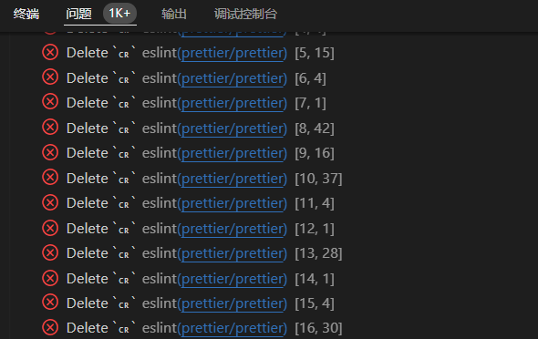
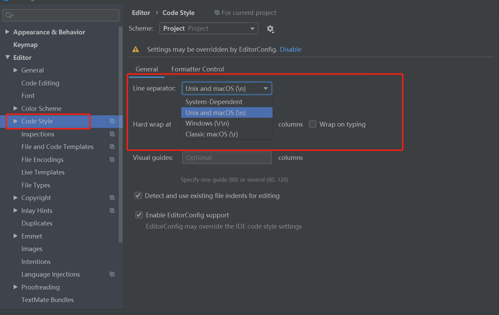
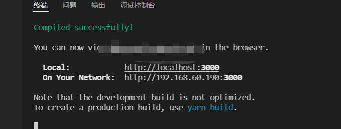

Windows上git换行符LF-CRLF问题
最近重装了系统，因为 PO 用的 mac，所以在 Windows 上下载完代码插件就会大量报错。

问题原因
在不同的操作系统中，换行符并不统一，Linux 系统中使用 0x0D0A(CRLF),而 MAC OS 系统起初使用 0x0D(CR) 后来和 Linux 系统保持一致。 而 git 默认采用 Linux 的换行符。
git 为了解决不同平台换行符不一致的问题，在 windows 操作系统中默认在检出代码时将 LF 转换为 CRLF,而在提交的时候再转换为 LF，但是看似完美的解决方案在中文环境中却失效了。
解决方法
方案一：编译器设置

方案二：
git 的相关参数：eol autocrlf safecrlf
- eol: 设置工作目录中文件的换行符，有三个值 lf, crlf 和 native（默认，同操作系统）
- autocrlf:
- true 表示检出是转换 CRLF, 提交时转换为 LF
- input 表示检出是不转换，提交时转换为 LF
- false 表示不做转换
- safecrlf:
- true 表示不允许提交时包含不同换行符
- warn 则只在有不同换行符时警告
- false 则允许提价时有不同换行符存在
AutoCRLF
1 | |
SafeCRLF
1 | |
解决方案
对于 Windows 系统，可以将 Git 客户端配置为将行结束符转换为 CRLF 格式，同时退出，并在提交操作时将其转换回 LF 格式。
1 | |
对于 GNU/Linux 或 Mac OS，我们可以配置 Git 客户端，以便在执行提交时从 CRLF 转换为 LF。
1 | |
问题解决 愉快的码代码吧！

本博客所有文章除特别声明外，均采用 CC BY-SA 4.0 协议 ，转载请注明出处！